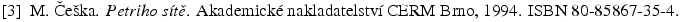

Co jsou citace
Citace lze najít velice èasto v odborných textech. Jde o odkazy na pou¾itou literaturu, kdy seznam literatury bývá umístìn na konci èlánku, kapitoly nebo celé knihy. Jednotlivé polo¾ky v seznamu literatury bývají opatøeny znaèkami, které se pak pou¾ívají v textu jako odkazy. Tyto znaèky mohou mít rùzný tvar, ale je zvykem je v¾dy uzavírat do hranatých závorek.
Nejèastìji se lze setkat se dvìma typy tìchto znaèek. První typ je tvoøen jednodu¹e poøadovým èíslem odkazu v seznamu literatury a odkazy pak vypadají takto: [1], nebo pokud chceme odkazovat na více zdrojù zároveò, tak takto: [3, 5, 10]. Druhý nejèastìj¹í typ je tvoøen prvními znaky autorova jména a rokem, kdy byla odkazovaná publikace zveøejnìna: [Mar98]. Více zdrojù odkazovaných zároveò lze opìt oddìlit èárkou: [Chom52, Tur45].
|  |
| Obrázek 1: Záznam v seznamu literatury se znaèkou tvoøenou poøadovým èíslem. |
|
| Obrázek 2: Záznam v seznamu literatury se znaèkou tvoøenou jménem autora a rokem vydání. |
Proè citace pou¾ívat
Pøed tím, ne¾ se zaèneme zabývat tím, jak v dokumentu správnì citovat jiné autory, bychom se mìli zamyslet nad otázkou proè bychom to vùbec mìli dìlat. Pokud pí¹ete nìjaký text a necitujete ¾ádné jiné autory, znamená to, ¾e jde o va¹e vlastní autorské dílo, které jste od a do z vymysleli sami. U technických a vìdeckých textù je nìco takového témìø vylouèeno a dokument bez citací pak lze interpretovat rùznými zpùsoby:
- Pøi tvorbì svého díla jste ¾ádnou literaturu opravdu nepou¾ili. To znamená, ¾e jste se ani nepokou¹eli zjistit, zda nìco podobného jako vy u¾ neøe¹il nìkdo jiný pøed vámi.
- Nevíte, jak citovat jiné autory.
- Literaturu jste pou¾ívali, ale chcete zakrýt skuteènost, ¾e stejnou práci jako vy u¾ uveøejnil nìkdo jiný, nebo skuteènost, ¾e jste èásti své práce opsali.
Kterákoli ze zmínìných mo¾ností je velmi ¹patnou vizitkou. Poslední mo¾nost, tedy pøevzetí cizího textu bez zmínky o pùvodním autorovi je pova¾ována za obzvlá¹tì podlý èin. Pøi hodnocení bakaláøských a diplomových prací, ale také èlánkù na vìdeckých konferencích je úroveò citací pou¾itých v dokumentu souèástí hodnocení a práce bez citací nebo chybnì citující pou¾itou literaturu mohou být dokonce odmítnuty.
Poznámka k pøebírání cizích textù
V drtivé vìt¹inì pøípadù se nepova¾uje za pøípustné pou¾ívat pøejaté texty. Témìø v¾dy je lep¹í danou problematiku popsat vlastními slovy a uvést odkaz na pou¾itou literaturu. Ve výjimeèných pøípadech lze doslovnì citovat cizí my¹lenku, ale nemìlo by jít o text del¹í ne¾ zhruba odstavec. V takových pøípadech se pro sazbu pou¾ívá speciální oboustrannì odsazený odstavec. V blízkém okolí tohoto odstavce by se mìl nacházet odkaz na zdroj, aby bylo zøejmé, koho a co citujete.
Pro tyto pøíle¾itosti v LaTeXu existují dvì prostøedí - quote a quotation. Tato prostøedí se li¹í jen tím, ¾e prostøedí quotation odsazuje první øádek odstavce. Hodí se tedy pro pou¾ití za libovolným odstavcem. Prostøedí quote se hodí, pokud je pou¾ito za nadpisem.
Osobnì jsem v¹ak tuto konstrukci nikdy nepotøeboval ani nepou¾il.
Formát polo¾ky v seznamu literatury
Tvar polo¾ek v seznamu literatury je normován. Podle èeské normy by mìla polo¾ka seznamu obsahovat minimálnì tyto informace:
| [návì¹tí] |
J. Autor, S. D. Spoluautor: Název publikace. Místo vydání, Vydavatelství, Rok vydání. |
Jména autorù se vìt¹inou sází bez titulù, jen poèáteèní písmena jmen, celá se sází jen pøíjmení. Název publikace je vhodné zvýraznit. Pokud chcete ètenáøùm usnadnit vyhledávání, je dobré pøidat na konec je¹tì ISBN. To je èíselný kód, který najdete v tirá¾i (a vìt¹inou i na zadní stranì) ka¾dé ti¹tìné knihy. U periodik lze v tirá¾i najít kód se zkratkou ISSN. Podle tìchto jedineèných kódù se pak publikace snadno vyhledává buï na internetu nebo v knihovnì.
U èlánkù se je¹tì uvádí název sborníku nebo èasopisu, kde byl tento èlánek uveøejnìn a èísla stránek, kde se èlánek nachází. U nìkterých publikací, pokud je to potøeba, se je¹tì pøidávají dal¹í údaje jako název kapitoly, jméno editora, URL adresa (+ mìsíc a rok poslední kontroly, ¾e je zmiòovaný odkaz ¾ivý), a jiné. Základní informace by v¹ak, pokud jsou k dispozici, nikdy chybìt nemìly.
Citace v LaTeXu
Práce s citacemi v LaTeXu se skládá ze dvou krokù - vytvoøení seznamu pou¾ité literatury a vlo¾ení odkazù na nì do textu. Mo¾ností, jak vytvoøit seznam literatury je více, ale v¾dy platí, ¾e je potøeba ka¾dou polo¾ku seznamu opatøit návì¹tím (label). Pomocí tohoto návì¹tí pak budeme v textu odkazovat na jednotlivé polo¾ky seznamu (podobnì jako se odkazuje na obrázky a kapitoly pomocí \ref{}). Pro odkazování se pou¾ívá pøíkaz \cite{label}. Pokud je potøeba odkazovat na více zdrojù zároveò, staèí do slo¾ených závorek umístit seznam identifikátorù oddìlený èárkami: \cite{label1, label2, label3}. V místì pou¾ití se pak tento pøíkaz nahradí odkazem v hranatých závorkách, napøíklad \cite{ceska} se nahradí za [Èe¹94]. Odkazy lze upøesnit pomocí nepovinného parametru: \cite[str. 35]{ceska} zobrazí [Èe¹94, str. 35].
LaTeX standardnì tiskne pouze ty polo¾ky seznamu, které jsou v textu citovány. Pokud je potøeba mít v seznamu literatury i polo¾ky, které citovány nejsou, lze pou¾ít pøíkaz \nocite{seznam}. Jeho parametrem je seznam návì¹tí. Tento pøíkaz v textu nic nevygeneruje, tak¾e jej lze pou¾ít kdekoli. Pøíhodné místo je napøíklad tìsnì pøed vlastním seznamem literatury.
Seznam literatury pomocí (thebibliography)
Prvním zpùsobem, jak vytvoøit seznam literatury je pou¾ít prostøedí thebibliography. Do tohoto prostøedí je pak nutné vepsat seznam vèetnì specifikace pøíslu¹ných návì¹tí. Návì¹tí se specifikují pomocí pøíkazu \bibitem[text-návì¹tí]{návì¹tí}.
\begin{thebibliography}{Per00}
\bibitem[Èe¹94]{ceska} M. Èe¹ka:
\emph{Petriho sítì}. Akademické nakladatelství CERM,
Brno, 1994. ISBN 80-85867-35-4.
\bibitem[Per00]{homesim} P. Peringer:
\emph{SIMLIB home page}. (leden 2000).\\
\verb|http://www.fee.vutbr.cz/~peringer/SIMLIB/|
\end{thebibliography}
Parametr prostøedí thebibliography je text svou délkou odpovídající nejdel¹ímu návì¹tí. Slou¾í LaTeXu ke správnému odsazování údajù. První parametr pøíkazu \bibitem je nepovinný. Pøesnì toto se vysází jako návì¹tí v dokumentu. Pokud tento parametr není pou¾it bude LaTeX jako návì¹tí pou¾ívat obyèejné arabské èíslice. Druhým parametrem je návì¹tí, které se bude pou¾ívat pøi odkazování pomocí pøíkazu \cite. Toto návì¹tí slou¾í jen pro autora LaTeXového dokumentu.
Tento zpùsob tvorby seznamù literatury se hodí pouze na malé seznamy, u nich¾ nebude potøeba mìnit formátování.
Pou¾ití BibTeXu
Pøedchozí zpùsob vytváøení seznamu literatury je univerzální, proto¾e si vystaèíme pouze se samotným LaTeXem, ale dle mého názoru je to zpùsob pracný a málo pru¾ný. Takovýto seznam se velmi tì¾ko spravuje, zvlá¹tì jestli¾e je potøeba mìnit formátování (napøíklad v zahranièních publikacích mohou vy¾adovat jiný zpùsob formátování údajù ne¾ u nás). Pokud máte v zásobì vìt¹í mno¾ství literatury, na kterou chcete ve svých èláncích odkazovat, je výhodné mít seznam oddìlený od vlastního dokumentu, respektive zpùsobu zobrazení. Nástroj, který toto umo¾òuje se nazývá BibTeX. Tomuto systému se vìnuji podrobnìji v následující kapitole.
Autor: David Martinek. Poslední modifikace:
24. February 2008. Pokud v tomto dokumentu narazíte na chybu, dejte mi prosím vìdìt.